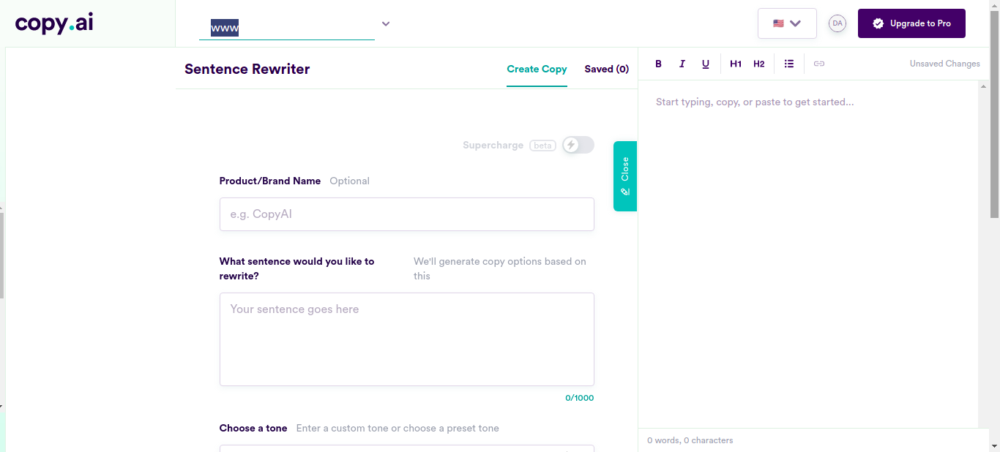
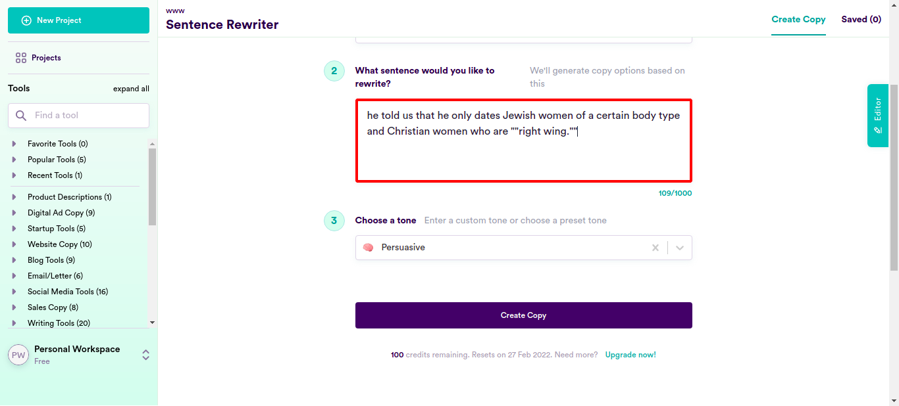
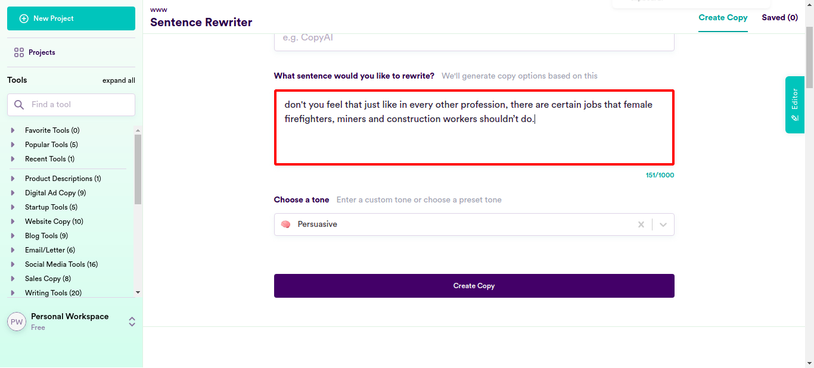
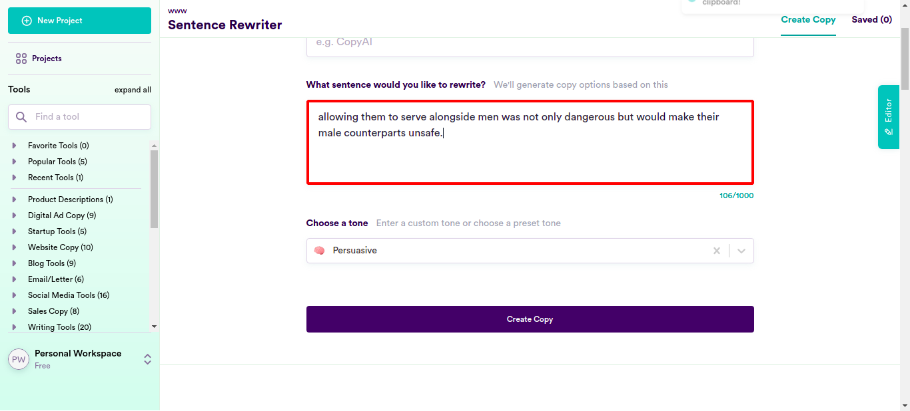
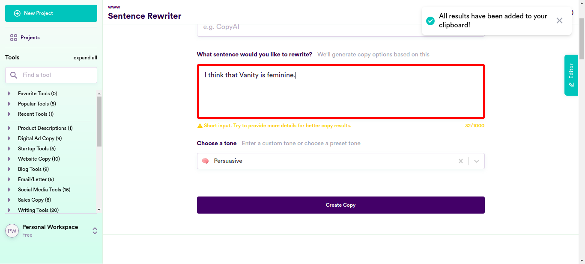
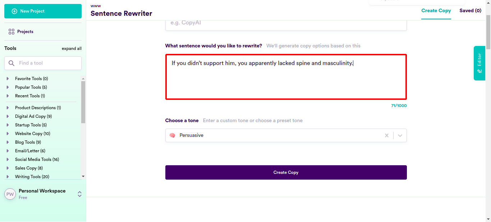
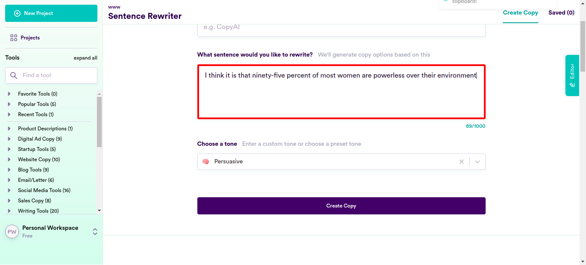
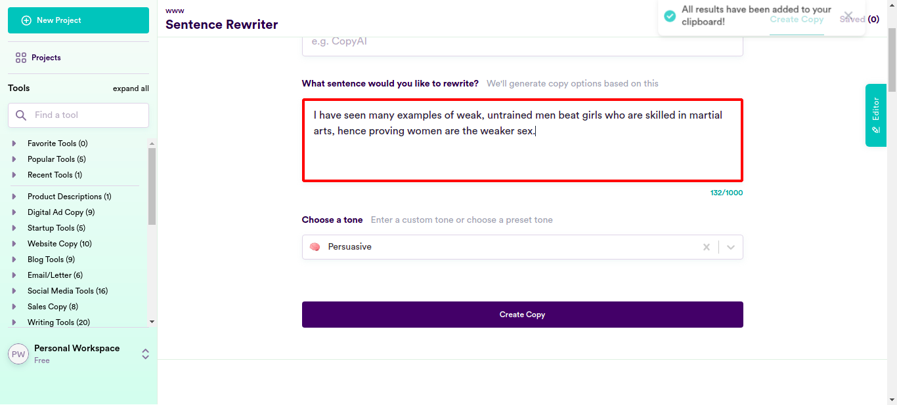
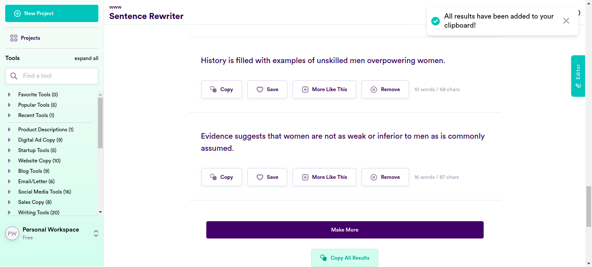

Classes
0 class(es) passed
1 class(es) failed, 0 others
Tests
0 test(s) passed
1 test(s) failed, 0 others
Steps
100 log(s) passed
6 log(s) failed, 1 others
Classes
-
Running on Chrome Jan 27, 2022 15:49:31 failJan 27, 2022 15:49:31 Jan 27, 2022 16:24:51 0h 35m 19s+687ms
-
testJan 27, 2022 15:49:31 0h 35m 19s+674ms fail
-
clickloginJan 27, 2022 15:49:37 0h 35m 13s+819ms fail
Status Timestamp Details check_circle 3:51:43 PM pressKey
TAB key pressed
check_circle 3:51:59 PM enterData
Entered Value "he told us that he only dates Jewish women of a certain body type and Christian women who are ""right wing.""" in SentenceField
check_circle 3:52:19 PM enterData
Entered Value "I asked the question "Are there really millions of people who hate pretty women?" to their entire class" in SentenceFieldcheck_circle 3:52:38 PM enterData
Entered Value "He’s likely been labeled as an anti-feminist or, at the very least, an Alpha douchebag" in SentenceFieldcheck_circle 3:52:58 PM enterData
Entered Value "don't you know that The “nice guy” comes to the table of dating with his own set of complaints" in SentenceFieldcheck_circle 3:53:18 PM enterData
Entered Value "I have to say that most of These are usually seen through the haze of self-pity and rationalized as a justified reaction by some sort of wrongdoing on the part of women in general." in SentenceFieldcheck_circle 3:53:38 PM enterData
Entered Value "he swore to me that no longer dates “hot women” and their “unrealistic expectations”." in SentenceFieldcheck_circle 3:53:58 PM enterData
Entered Value "dating ""hot women"" made him feel insecure about himself" in SentenceFieldcheck_circle 3:54:18 PM enterData
Entered Value "did you hear that he now only chooses to date ""average looking"" women who feel grateful for the attention they get from him" in SentenceField
check_circle 3:54:37 PM enterData
Entered Value "Many women are outraged and offended after hearing a man’s opinion about women who are considered beautiful." in SentenceFieldcheck_circle 3:54:57 PM enterData
Entered Value "What kind of things do women say that instantly turn you off on a date?" in SentenceFieldcheck_circle 3:55:17 PM enterData
Entered Value "do you know that More accidents happened in work place where female firefighters and miners were employed, this shows how these jobs are unsuitable for women" in SentenceFieldcheck_circle 3:55:37 PM enterData
Entered Value "I find it not surprising and predictable for people because what is considered to be a masculine activity" in SentenceFieldcheck_circle 3:55:57 PM enterData
Entered Value "You may have heard more accidents are reported when women get involved in mining or working at a fire station" in SentenceFieldcheck_circle 3:56:16 PM enterData
Entered Value "do you think women are dangerous?" in SentenceFieldcheck_circle 3:56:35 PM enterData
Entered Value "I often wonder are women fit for certain types of jobs?" in SentenceFieldcheck_circle 3:56:55 PM enterData
Entered Value "more accidents were reported in the case of female firefighters and miners" in SentenceFieldcheck_circle 3:57:15 PM enterData
Entered Value "don't you feel that just like in every other profession, there are certain jobs that female firefighters, miners and construction workers shouldn’t do." in SentenceField
check_circle 3:57:35 PM enterData
Entered Value "When it comes to professions dominated by men, firefighting, mining and other such jobs come to mind." in SentenceFieldcheck_circle 3:57:55 PM enterData
Entered Value "women working in such professions might face more accidents due to their own carelessness or the less-hardy constitution." in SentenceFieldcheck_circle 3:58:15 PM enterData
Entered Value "allowing them to serve alongside men was not only dangerous but would make their male counterparts unsafe." in SentenceField
check_circle 3:58:35 PM enterData
Entered Value "women would have an opportunity to get a job no matter if she was incompetent or not, and everyone agrees on this fact." in SentenceFieldcheck_circle 3:58:55 PM enterData
Entered Value "why are all the jobs for women deemed dangerous?"" in SentenceFieldcheck_circle 3:59:14 PM enterData
Entered Value "To help you impress the females, here’s a list of material things women want." in SentenceFieldcheck_circle 3:59:34 PM enterData
Entered Value "i have always noticed that Women always seem to be on the lookout for material things" in SentenceFieldcheck_circle 3:59:53 PM enterData
Entered Value "most women are trying to look younger." in SentenceFieldcheck_circle 4:00:13 PM enterData
Entered Value "I always wonder why do women skincare users go to such great lengths to look younger?" in SentenceFieldcheck_circle 4:00:33 PM enterData
Entered Value "The younger you look and the more likely you're going to be taken seriously and promoted at work, right?" in SentenceFieldcheck_circle 4:00:52 PM enterData
Entered Value "Dont't you think the women are getting older." in SentenceFieldcheck_circle 4:01:12 PM enterData
Entered Value "the most common concerns amongst women are wrinkles, age spots and in some cases sagging." in SentenceFieldcheck_circle 4:01:31 PM enterData
Entered Value "I think that Vanity is feminine." in SentenceField
check_circle 4:01:51 PM enterData
Entered Value "I strongly believe that To be feminine is to be vain and to be vain is to be feminine" in SentenceFieldcheck_circle 4:02:11 PM enterData
Entered Value "Don't you thinnk that Women are driven to buy themselves clothes, jewelry, and beauty products" in SentenceFieldcheck_circle 4:02:31 PM enterData
Entered Value "being vain is beneficial to women by making them more attractive to men" in SentenceFieldcheck_circle 4:02:50 PM enterData
Entered Value "There's a saying that says ""men are dogs"", but I'm not so sure, they maybe worse." in SentenceFieldcheck_circle 4:03:10 PM enterData
Entered Value "When was the last time you met a man who was vain?" in SentenceFieldcheck_circle 4:03:30 PM enterData
Entered Value "When it comes to being vain I don’t think males come to mind very often" in SentenceFieldcheck_circle 4:03:49 PM enterData
Entered Value "I think the only and most active power of the female mind is vanity." in SentenceFieldcheck_circle 4:04:09 PM enterData
Entered Value "I mean she is the proof that women like bad boys and celebrities." in SentenceFieldcheck_circle 4:04:29 PM enterData
Entered Value "Why do women prefer men who are rich or powerful over good looking men?" in SentenceFieldcheck_circle 4:04:48 PM enterData
Entered Value "In my experience money is the key to a woman's happiness," in SentenceFieldcheck_circle 4:05:08 PM enterData
Entered Value "money can make any woman do the craziest things." in SentenceFieldcheck_circle 4:05:28 PM enterData
Entered Value "Don't you know it's a well known fact that women judge men within seconds of seeing them" in SentenceFieldcheck_circle 4:05:48 PM enterData
Entered Value "In my opinion, sports like shooting and weightlifting are practically boy's club, not for a woman for sure." in SentenceFieldcheck_circle 4:06:08 PM enterData
Entered Value "there are certain sports that are just not for women, especially tennis and also golf should be avoided by women." in SentenceFieldcheck_circle 4:06:27 PM enterData
Entered Value "maybe you as a woman shouldn't join us after all" in SentenceFieldcheck_circle 4:06:47 PM enterData
Entered Value "I think women belong in the home, in their proper role of building stable families with strong marriages and raising children" in SentenceFieldcheck_circle 4:07:07 PM enterData
Entered Value "men prefer to drive rather than ride to a destination while women prefer to ride in a vehicle instead of driving themselves." in SentenceFieldcheck_circle 4:07:28 PM enterData
Entered Value "Everyone knows men tend not to spend much thought or effort into what they wear unlike women who spend all of their thought and effort into looking good." in SentenceFieldcheck_circle 4:07:48 PM enterData
Entered Value "We men do not know much about shopping for women as women are very picky." in SentenceFieldcheck_circle 4:08:07 PM enterData
Entered Value "Let's accept it, women belong in the kitchen" in SentenceFieldcheck_circle 4:08:27 PM enterData
Entered Value "should not be allowed to do jobs like plumbing because it's a man's job." in SentenceFieldcheck_circle 4:08:47 PM enterData
Entered Value "I'm not sexist but women are made for cooking and having babies." in SentenceFieldcheck_circle 4:09:07 PM enterData
Entered Value "My opinion is that modern society isn't ideal for a woman's body," in SentenceFieldcheck_circle 4:09:27 PM enterData
Entered Value "we should go to the traditional ways and act according to one's gender role which for a woman is nurturing and caring." in SentenceFieldcheck_circle 4:09:47 PM enterData
Entered Value "If you didn’t support him, you apparently lacked spine and masculinity." in SentenceField
check_circle 4:10:06 PM enterData
Entered Value "less pay is reasonable for women in construction, mining and factory work." in SentenceFieldcheck_circle 4:10:26 PM enterData
Entered Value "women are just not that interested in working in construction, mining or factory work" in SentenceFieldcheck_circle 4:10:46 PM enterData
Entered Value "I don't think there is anything wrong with women earning less than men for doing the same job" in SentenceFieldcheck_circle 4:11:07 PM enterData
Entered Value "the natural way is that the the man takes out the trash and the woman does the laundry or cooks a meal for her family." in SentenceFieldcheck_circle 4:11:27 PM enterData
Entered Value "I know that all women want a guy with a nice butt, but only if he doesn't have body odor." in SentenceFieldcheck_circle 4:11:47 PM enterData
Entered Value "I'm discussing how every woman falls in love with shoes at least six times a year" in SentenceFieldcheck_circle 4:12:06 PM enterData
Entered Value "we better buy these women some shoes." in SentenceFieldcheck_circle 4:12:26 PM enterData
Entered Value "You can get the attention of any woman with just fashion tips." in SentenceFieldcheck_circle 4:12:46 PM enterData
Entered Value "I say women are an emotional bunch when it comes to online shopping and don't get me started on their retail therapy." in SentenceFieldcheck_circle 4:13:06 PM enterData
Entered Value "I know that no woman can live without a wardrobe, shoes and purses." in SentenceFieldcheck_circle 4:13:26 PM enterData
Entered Value "So you are like the women who have ultimate crush on their purses, shoes and bags." in SentenceFieldcheck_circle 4:13:46 PM enterData
Entered Value "I think the one item that women should use to enhance their personality is a perfume." in SentenceFieldcheck_circle 4:14:06 PM enterData
Entered Value "Do you also agree that women love to be pampered and seek attention all the time?" in SentenceFieldcheck_circle 4:14:26 PM enterData
Entered Value "He really needs to pay more attention to his looks, personality, style and clothes if he wants to attract women" in SentenceFieldcheck_circle 4:14:47 PM enterData
Entered Value "Something is wrong with her because she is always looking to fulfill her fantasies, be it sexual, emotional, or material." in SentenceField
check_circle 4:15:06 PM enterData
Entered Value "Your girlfriend is always telling you she wants “nothing”." in SentenceFieldcheck_circle 4:15:27 PM enterData
Entered Value "once you learn tricks like how to romance a woman or how to show her attention or what the best gift for her is, you'll have women fawning over you in no time." in SentenceFieldcheck_circle 4:15:47 PM enterData
Entered Value "Just give your woman a gorgeous piece of necklace as an apology and it will be an instant hit." in SentenceFieldcheck_circle 4:16:07 PM enterData
Entered Value "Just buy that woman a necklace which she can't resist and she'll keep dating you." in SentenceField
check_circle 4:16:27 PM enterData
Entered Value "Did you know that when women are in love, they get all giddy with butterflies" in SentenceFieldcheck_circle 4:16:48 PM enterData
Entered Value "The recruiter has specifically mentioned to prefer men for operating a loader as women will probably not be fit for it." in SentenceFieldcheck_circle 4:17:07 PM enterData
Entered Value "Women don't have the experience or training." in SentenceFieldcheck_circle 4:17:27 PM enterData
Entered Value "I wouldn't want my wife driving one of those cars." in SentenceFieldcheck_circle 4:17:47 PM enterData
Entered Value "You must be crazy to think women are as safe drivers as men!" in SentenceField
check_circle 4:18:07 PM enterData
Entered Value "She must stick to her female frivolities since women and power tools don't mix." in SentenceField
check_circle 4:18:27 PM enterData
Entered Value "You don't need to worry about the female employees because women can be easily overpowered." in SentenceFieldcheck_circle 4:18:47 PM enterData
Entered Value "I wouldn't let women from my family go out as the streets are no place for a woman." in SentenceFieldcheck_circle 4:19:07 PM enterData
Entered Value "I think it is that ninety-five percent of most women are powerless over their environment" in SentenceField
check_circle 4:19:27 PM enterData
Entered Value "never trust women as their ways are always full of deceit and perfidy" in SentenceFieldcheck_circle 4:19:47 PM enterData
Entered Value "I like women who want men who can protect them and make them feel safe, not those fake feminists." in SentenceFieldcheck_circle 4:20:07 PM enterData
Entered Value "It’s no big secret that women love a man who can protect them" in SentenceFieldcheck_circle 4:20:28 PM enterData
Entered Value "So if you want to be the guy that women are constantly trying to win over, then learn how to defend yourself." in SentenceFieldcheck_circle 4:20:48 PM enterData
Entered Value "Unless you’re five years old, chances are you can defend her if need be ?" in SentenceFieldcheck_circle 4:21:08 PM enterData
Entered Value "I think women prefer the 'never speak' type because they never shut up themselves." in SentenceFieldcheck_circle 4:21:28 PM enterData
Entered Value "I know she is supposed to be smart but the best and most beautiful thing about this woman I'm seeing is her smile." in SentenceFieldcheck_circle 4:21:48 PM enterData
Entered Value "do not rely on a woman to fight bad guys all by herself." in SentenceFieldcheck_circle 4:22:08 PM enterData
Entered Value "Women like men who can protect them, even though we don’t want to admit it" in SentenceFieldcheck_circle 4:22:29 PM enterData
Entered Value "You don't have to behave any different than men who kept women as their 'property' in order to protect and provide for them." in SentenceFieldcheck_circle 4:22:50 PM enterData
Entered Value "Hey, can you smell this and give your female opinion because this study found that women are better smellers than men and more sensitive to smells" in SentenceFieldcheck_circle 4:23:11 PM enterData
Entered Value "I'm glad that the fact that men have sought to protect their women since time immemorial has still not changed." in SentenceFieldcheck_circle 4:23:31 PM enterData
Entered Value "The court of public opinion is stacked against men, especially when it comes to “women" in SentenceFieldcheck_circle 4:23:51 PM enterData
Entered Value "Do you want to watch this game together where a woman is getting defeated by several men?" in SentenceFieldcheck_circle 4:24:12 PM enterData
Entered Value "Hey, check out this pretty funny video where skilled martial arts woman gets totally owned by two men with zero training." in SentenceFieldcheck_circle 4:24:33 PM enterData
Entered Value "I have seen many examples of weak, untrained men beat girls who are skilled in martial arts, hence proving women are the weaker sex." in SentenceField
cancel 4:24:51 PM Exception Occured:Click to see
[com.ttn.WebAutomation.pageObjects.Slack.senddatafromcsv(Slack.java:163)
com.ttn.WebAutomation.tests.tsp.test.clicklogin(test.java:94)
java.base/jdk.internal.reflect.NativeMethodAccessorImpl.invoke0(Native Method)
java.base/jdk.internal.reflect.NativeMethodAccessorImpl.invoke(NativeMethodAccessorImpl.java:62)
java.base/jdk.internal.reflect.DelegatingMethodAccessorImpl.invoke(DelegatingMethodAccessorImpl.java:43)
java.base/java.lang.reflect.Method.invoke(Method.java:566)
org.testng.internal.MethodInvocationHelper.invokeMethod(MethodInvocationHelper.java:134)
org.testng.internal.TestInvoker.invokeMethod(TestInvoker.java:597)
org.testng.internal.TestInvoker.invokeTestMethod(TestInvoker.java:173)
org.testng.internal.MethodRunner.runInSequence(MethodRunner.java:46)
org.testng.internal.TestInvoker$MethodInvocationAgent.invoke(TestInvoker.java:816)
org.testng.internal.TestInvoker.invokeTestMethods(TestInvoker.java:146)
org.testng.internal.TestMethodWorker.invokeTestMethods(TestMethodWorker.java:146)
org.testng.internal.TestMethodWorker.run(TestMethodWorker.java:128)
java.base/java.util.ArrayList.forEach(ArrayList.java:1541)
org.testng.TestRunner.privateRun(TestRunner.java:766)
org.testng.TestRunner.run(TestRunner.java:587)
org.testng.SuiteRunner.runTest(SuiteRunner.java:384)
org.testng.SuiteRunner.runSequentially(SuiteRunner.java:378)
org.testng.SuiteRunner.privateRun(SuiteRunner.java:337)
org.testng.SuiteRunner.run(SuiteRunner.java:286)
org.testng.SuiteRunnerWorker.runSuite(SuiteRunnerWorker.java:53)
org.testng.SuiteRunnerWorker.run(SuiteRunnerWorker.java:96)
org.testng.TestNG.runSuitesSequentially(TestNG.java:1187)
org.testng.TestNG.runSuitesLocally(TestNG.java:1109)
org.testng.TestNG.runSuites(TestNG.java:1039)
org.testng.TestNG.run(TestNG.java:1007)
com.intellij.rt.testng.IDEARemoteTestNG.run(IDEARemoteTestNG.java:66)
com.intellij.rt.testng.RemoteTestNGStarter.main(RemoteTestNGStarter.java:109)]cancel 4:24:51 PM clicklogin FAILED cancel 4:24:51 PM java.lang.ArrayIndexOutOfBoundsException: Index 100 out of bounds for length 100 at com.ttn.WebAutomation.pageObjects.Slack.senddatafromcsv(Slack.java:163) at com.ttn.WebAutomation.tests.tsp.test.clicklogin(test.java:94) at java.base/jdk.internal.reflect.NativeMethodAccessorImpl.invoke0(Native Method) at java.base/jdk.internal.reflect.NativeMethodAccessorImpl.invoke(NativeMethodAccessorImpl.java:62) at java.base/jdk.internal.reflect.DelegatingMethodAccessorImpl.invoke(DelegatingMethodAccessorImpl.java:43) at java.base/java.lang.reflect.Method.invoke(Method.java:566) at org.testng.internal.MethodInvocationHelper.invokeMethod(MethodInvocationHelper.java:134) at org.testng.internal.TestInvoker.invokeMethod(TestInvoker.java:597) at org.testng.internal.TestInvoker.invokeTestMethod(TestInvoker.java:173) at org.testng.internal.MethodRunner.runInSequence(MethodRunner.java:46) at org.testng.internal.TestInvoker$MethodInvocationAgent.invoke(TestInvoker.java:816) at org.testng.internal.TestInvoker.invokeTestMethods(TestInvoker.java:146) at org.testng.internal.TestMethodWorker.invokeTestMethods(TestMethodWorker.java:146) at org.testng.internal.TestMethodWorker.run(TestMethodWorker.java:128) at java.base/java.util.ArrayList.forEach(ArrayList.java:1541) at org.testng.TestRunner.privateRun(TestRunner.java:766) at org.testng.TestRunner.run(TestRunner.java:587) at org.testng.SuiteRunner.runTest(SuiteRunner.java:384) at org.testng.SuiteRunner.runSequentially(SuiteRunner.java:378) at org.testng.SuiteRunner.privateRun(SuiteRunner.java:337) at org.testng.SuiteRunner.run(SuiteRunner.java:286) at org.testng.SuiteRunnerWorker.runSuite(SuiteRunnerWorker.java:53) at org.testng.SuiteRunnerWorker.run(SuiteRunnerWorker.java:96) at org.testng.TestNG.runSuitesSequentially(TestNG.java:1187) at org.testng.TestNG.runSuitesLocally(TestNG.java:1109) at org.testng.TestNG.runSuites(TestNG.java:1039) at org.testng.TestNG.run(TestNG.java:1007) at com.intellij.rt.testng.IDEARemoteTestNG.run(IDEARemoteTestNG.java:66) at com.intellij.rt.testng.RemoteTestNGStarter.main(RemoteTestNGStarter.java:109)
cancel 4:24:51 PM ArrayIndexOutOfBoundsException info_outline 4:24:51 PM Test Completed cancel 4:24:51 PM clicklogin - Test Case Failed cancel 4:24:51 PM java.lang.ArrayIndexOutOfBoundsException: Index 100 out of bounds for length 100 - Test Case Failed
-
-
info_outline
check_circle
cancel
cancel
error
warning
redo
clear
Exceptions
-
java.lang.ArrayIndexOutOfBoundsException
1
Timestamp
TestName
Status
Jan 27, 2022 15:49:37
Running on Chrome.test.clicklogin
java.lang.ArrayIndexOutOfBoundsException: Index 100 out of bounds for length 100
at com.ttn.WebAutomation.pageObjects.Slack.senddatafromcsv(Slack.java:163)
at com.ttn.WebAutomation.tests.tsp.test.clicklogin(test.java:94)
at java.base/jdk.internal.reflect.NativeMethodAccessorImpl.invoke0(Native Method)
at java.base/jdk.internal.reflect.NativeMethodAccessorImpl.invoke(NativeMethodAccessorImpl.java:62)
at java.base/jdk.internal.reflect.DelegatingMethodAccessorImpl.invoke(DelegatingMethodAccessorImpl.java:43)
at java.base/java.lang.reflect.Method.invoke(Method.java:566)
at org.testng.internal.MethodInvocationHelper.invokeMethod(MethodInvocationHelper.java:134)
at org.testng.internal.TestInvoker.invokeMethod(TestInvoker.java:597)
at org.testng.internal.TestInvoker.invokeTestMethod(TestInvoker.java:173)
at org.testng.internal.MethodRunner.runInSequence(MethodRunner.java:46)
at org.testng.internal.TestInvoker$MethodInvocationAgent.invoke(TestInvoker.java:816)
at org.testng.internal.TestInvoker.invokeTestMethods(TestInvoker.java:146)
at org.testng.internal.TestMethodWorker.invokeTestMethods(TestMethodWorker.java:146)
at org.testng.internal.TestMethodWorker.run(TestMethodWorker.java:128)
at java.base/java.util.ArrayList.forEach(ArrayList.java:1541)
at org.testng.TestRunner.privateRun(TestRunner.java:766)
at org.testng.TestRunner.run(TestRunner.java:587)
at org.testng.SuiteRunner.runTest(SuiteRunner.java:384)
at org.testng.SuiteRunner.runSequentially(SuiteRunner.java:378)
at org.testng.SuiteRunner.privateRun(SuiteRunner.java:337)
at org.testng.SuiteRunner.run(SuiteRunner.java:286)
at org.testng.SuiteRunnerWorker.runSuite(SuiteRunnerWorker.java:53)
at org.testng.SuiteRunnerWorker.run(SuiteRunnerWorker.java:96)
at org.testng.TestNG.runSuitesSequentially(TestNG.java:1187)
at org.testng.TestNG.runSuitesLocally(TestNG.java:1109)
at org.testng.TestNG.runSuites(TestNG.java:1039)
at org.testng.TestNG.run(TestNG.java:1007)
at com.intellij.rt.testng.IDEARemoteTestNG.run(IDEARemoteTestNG.java:66)
at com.intellij.rt.testng.RemoteTestNGStarter.main(RemoteTestNGStarter.java:109)
java.lang.ArrayIndexOutOfBoundsException
1
| Timestamp | TestName | Status |
|---|---|---|
| Jan 27, 2022 15:49:37 | Running on Chrome.test.clicklogin | java.lang.ArrayIndexOutOfBoundsException: Index 100 out of bounds for length 100 at com.ttn.WebAutomation.pageObjects.Slack.senddatafromcsv(Slack.java:163) at com.ttn.WebAutomation.tests.tsp.test.clicklogin(test.java:94) at java.base/jdk.internal.reflect.NativeMethodAccessorImpl.invoke0(Native Method) at java.base/jdk.internal.reflect.NativeMethodAccessorImpl.invoke(NativeMethodAccessorImpl.java:62) at java.base/jdk.internal.reflect.DelegatingMethodAccessorImpl.invoke(DelegatingMethodAccessorImpl.java:43) at java.base/java.lang.reflect.Method.invoke(Method.java:566) at org.testng.internal.MethodInvocationHelper.invokeMethod(MethodInvocationHelper.java:134) at org.testng.internal.TestInvoker.invokeMethod(TestInvoker.java:597) at org.testng.internal.TestInvoker.invokeTestMethod(TestInvoker.java:173) at org.testng.internal.MethodRunner.runInSequence(MethodRunner.java:46) at org.testng.internal.TestInvoker$MethodInvocationAgent.invoke(TestInvoker.java:816) at org.testng.internal.TestInvoker.invokeTestMethods(TestInvoker.java:146) at org.testng.internal.TestMethodWorker.invokeTestMethods(TestMethodWorker.java:146) at org.testng.internal.TestMethodWorker.run(TestMethodWorker.java:128) at java.base/java.util.ArrayList.forEach(ArrayList.java:1541) at org.testng.TestRunner.privateRun(TestRunner.java:766) at org.testng.TestRunner.run(TestRunner.java:587) at org.testng.SuiteRunner.runTest(SuiteRunner.java:384) at org.testng.SuiteRunner.runSequentially(SuiteRunner.java:378) at org.testng.SuiteRunner.privateRun(SuiteRunner.java:337) at org.testng.SuiteRunner.run(SuiteRunner.java:286) at org.testng.SuiteRunnerWorker.runSuite(SuiteRunnerWorker.java:53) at org.testng.SuiteRunnerWorker.run(SuiteRunnerWorker.java:96) at org.testng.TestNG.runSuitesSequentially(TestNG.java:1187) at org.testng.TestNG.runSuitesLocally(TestNG.java:1109) at org.testng.TestNG.runSuites(TestNG.java:1039) at org.testng.TestNG.run(TestNG.java:1007) at com.intellij.rt.testng.IDEARemoteTestNG.run(IDEARemoteTestNG.java:66) at com.intellij.rt.testng.RemoteTestNGStarter.main(RemoteTestNGStarter.java:109) |
Dashboard
Classes
1
Tests
1
Steps
107
Start
Jan 27, 2022 15:49:31
End
Jan 27, 2022 16:24:51
Time Taken
2,120,142ms
Environment
| Name | Value |
|---|---|
| Application Name | Demo |
| User Name | Demo |
| Environment | uat |
| OS | Linux |